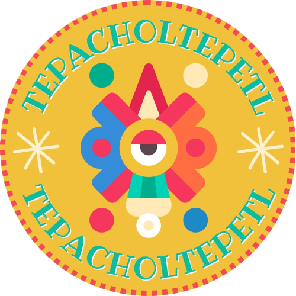

TEPACHOLTEPETL
 Instituto Tecnologico de México
Instituto Tecnologico de México
Creado por:
Fatima Corona IGEM
Valeria Corona IGEM
Esperanza Garcia IGEM
Carlos Angeles ITIC
Jesus Jimenez ITIC
Av. del Rosal 89, Tepeaca, Álvaro Obregón, 01550 Ciudad de México, CDMX.
Instituto Tecnologico de México
Creado por:
Fatima Corona IGEM
Valeria Corona IGEM
Esperanza Garcia IGEM
Carlos Angeles ITIC
Jesus Jimenez ITIC
Av. del Rosal 89, Tepeaca, Álvaro Obregón, 01550 Ciudad de México, CDMX.
Somos el corazón creativo detrás de Tepacholtepetl, un proyecto nacido de la pasión por la transformación y la profunda conciencia de nuestro impacto ambiental. Nos dedicamos a insuflar nueva vida a las modestas tapas de botella, rescatándolas del desecho para convertirlas en accesorios únicos y llenos de carácter. En Tepacholtepetl, creemos firmemente en el poder del upcycling y la reutilización como caminos esenciales hacia un futuro más sostenible. Con dedicación e imaginación, tejemos historias a través de cada pieza, ofreciendo expresiones artísticas que todos pueden.
Ambiental: Ofrecer una segunda oportunidad al reciclaje del plástico, reduciendo la cantidad de residuos que contaminan el medio ambiente y promoviendo la conciencia sobre la importancia de la reutilización. Creativo y Cultural: Fomentar la expresión artística y la identidad mexicana a través de la creación de bisutería y accesorios únicos y originales, inspirados en la riqueza cultural del país. Efecto Positivo en la Categoría Aplicable (Moda Sostenible y Accesorios Eco-Conscientes).
Nuestra técnica de solución se centra en la reutilización creativa y artesanal de tapas de botellas de plástico y metal para transformarlas en aretes únicos y atractivos. Este enfoque aborda la problemática de la contaminación por residuos plásticos a través de un proceso que añade valor estético y funcional a un material de desecho.
Los pasos clave de nuestra técnica de solución incluyen: Recolección y Clasificación: Establecemos un sistema para la recolección de tapas de botellas, ya sea a través de campañas de concientización, colaboraciones con negocios locales (restaurantes, bares, etc.), o la participación de la comunidad. Una vez recolectadas, las tapas se clasifican por material (plástico, metal), tamaño y color para facilitar su posterior selección y diseño.
Limpieza y Preparación: Las tapas recolectadas se someten a un proceso de limpieza exhaustivo para eliminar cualquier residuo o impureza. Dependiendo del diseño deseado, algunas tapas pueden requerir una preparación adicional, como lijado suave para mejorar la adherencia de pinturas o barnices, o la eliminación de bordes afilados para garantizar la seguridad del usuario.
Diseño y Creación: Esta es la etapa central de la técnica. Se exploran diversas posibilidades de diseño para los aretes, aprovechando la variedad de colores y formas de las tapas. Las técnicas de creación pueden incluir: Ensamblaje directo: Unir varias tapas mediante pegamento resistente, alambre fino, o pequeños conectores metálicos para formar figuras o patrones.
Transformación con pintura y acabados: Aplicar pintura acrílica, esmalte de uñas u otras técnicas de coloración para crear diseños personalizados sobre la superficie de las tapas. Se pueden añadir detalles con marcadores permanentes o pequeños adhesivos. Finalmente, se aplica un barniz protector para asegurar la durabilidad del diseño.
Nos dedicamos a transformar residuos plásticos en accesorios únicos, ofreciendo aretes artesanales elaborados con tapas recicladas, que promuevan la conciencia ecológica, el emprendimiento juvenil y el consumo responsable en nuestra comunidad.
Tepacholtepetl es un faro de innovación sostenible en el mundo de la joyería. Su visión central es transformar los desechos plásticos, específicamente tapas y botellas, en piezas de belleza única y significativa, demostrando que la conciencia ambiental y el estilo personal pueden coexistir armoniosamente dedicando técnicas innovadoras, busca resaltar la textura, el color y la forma inherentes de estos materiales, convirtiéndolos en elementos estéticos sorprendentes.
Responsabilidad Ambiental: Este es el valor central. La marca demuestra un compromiso activo con la reducción de la contaminación plástica, la conservación de recursos naturales y la promoción de prácticas sostenibles en toda su cadena de valor. Revalorización de Residuos: La marca cree en el potencial de transformar lo que se considera desecho en algo valioso y hermoso. Este valor destaca la creatividad y la innovación en la búsqueda de soluciones para los problemas ambientales. Innovación y Creatividad: La marca explora continuamente nuevas formas de transformar el plástico reciclado en diseños originales y atractivos, demostrando que la sostenibilidad no limita la creatividad, sino que la impulsa. Belleza con Propósito: La marca demuestra que la estética y la sostenibilidad pueden ir de la mano, ofreciendo joyas hermosas que además tienen un impacto positivo en el planeta. Comunidad y Colaboración: La marca puede fomentar la creación de una comunidad de personas comprometidas con la sostenibilidad y buscar colaboraciones con otras organizaciones o artistas con valores similares.
Página web: https://sedema.cdmx.gob.mx/programas/programa/reciclatron
Página web: https://sedema.cdmx.gob.mx/
Correo electrónico: atencionciudadana@sedema.cdmx.gob.mx